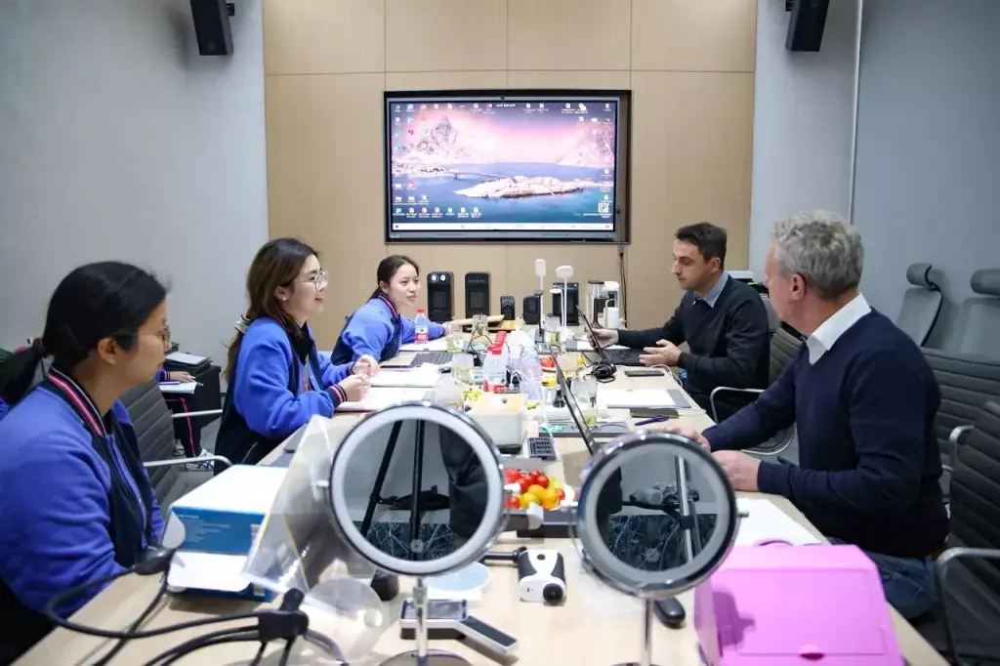

China sourcing · 2026 buyer update
China Sourcing Agent in 2026: 7 New Requirements International Buyers Should Expect
How AI-assisted research, changing low-value import rules, EU product safety, packaging data and traceable execution are redefining the agent's job.
Read the current guide →